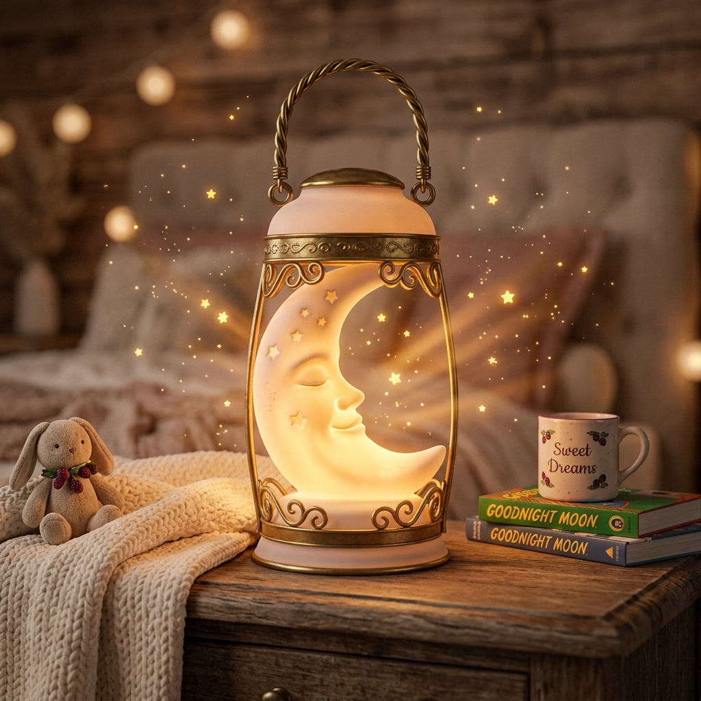
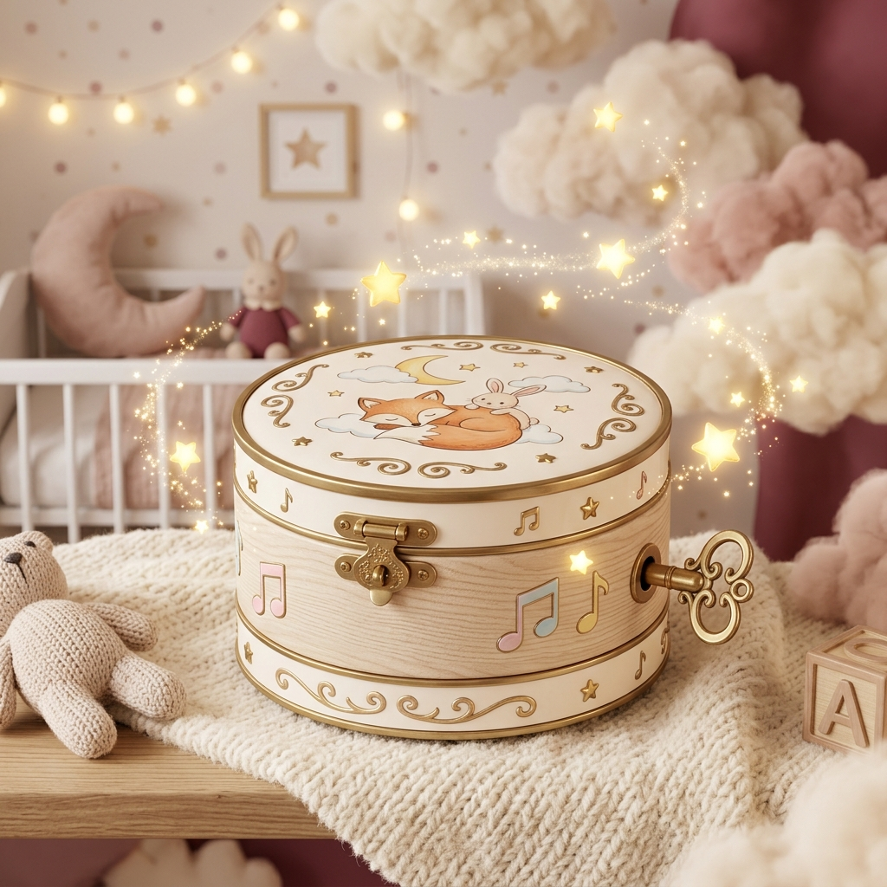

Pip's FavoriteCrescent Moon Lantern
Hand-carved frosted porcelain with brass trim. Radiates a comforting golden starlight glow that warms frosty toes.
● Glowing Amber · Tap to Switch ModeMeet Pip, the sleepy, gentle baby with a smooth round skull face, glowing amber starlight eyes, and a starry nightcap with a pink bow. Never scary—always cozy!
“Good things start small. Even the sweetest dreams begin with a single gentle yawn.”
Midnight Nursery Archives · Dispatch #001✨ A LITTLE DREAM ADVENTURE ✨
Every little idea begins with a tiny spark. Scroll down, little dreamer, and let's see where it takes us.
CHAPTER ONE
Pip collects tiny thoughts, colorful blocks, and wonderfully silly ideas. Even the smallest ones can grow into something magical.
CHAPTER TWO
Some ideas wobble. Some ideas sparkle. Pip keeps experimenting until a new constellation appears.
THE NEXT LITTLE ADVENTURE
And that is how Pip builds: one tiny experiment, one happy accident, and one big dream at a time.
When the night sky shimmers, Pip hears the first secret of a dream.
He soars above cloud‑carved islands, gathering starlight for the next adventure.
Every dream lands softly in a sleepy heart, and Pip smiles at the sunrise.
Pip’s patented bedtime synthesizer. Crafted with brass gears, pastel enamel, and Web Audio API oscillators that play comforting pentatonic harmonies.

Wind the key or press play to begin soothing chimes.
Pip’s hand-forged bedside reading lamp and starlight lanterns. Click the night lamp or pull its brass chain to toggle between warm Daylight Twilight and velvety Midnight Dream mode!
Cast in fluted brass with an antique pleated linen shade. Pulling the chain clicks the internal starlight dynamo, transitioning the entire nursery between sunlit twilight and starry midnight.

Pip's FavoriteHand-carved frosted porcelain with brass trim. Radiates a comforting golden starlight glow that warms frosty toes.
● Glowing Amber · Tap to Switch ModeBottled forest glow from the Sleepy Pines. Emits a calm emerald twilight perfect for little woodland creatures.
○ Tap to Switch ModeSprouted from dream soil at Midnight Nursery. Casts a soft lavender-berry tint designed to shoo away nightmares.
○ Tap to Switch ModePip’s nocturnal flight chart across Midnight Town and slumber realms. Click any glowing destination star or launch the flight simulator to inspect manifests, rotate the brass compass, and deliver dreams!
“This is where my brass kettles whistle! Before evening flight, I check every corked jar for leaks. One drop of lavender dew spilled on the rug, and the attic mice slept for 14 hours straight!”
Grab a color, wiggle your fingers, and draw absolutely anything! No rules, no mistakes, just baby-sized masterpieces. ♡
Pick a block and drag it around! ♡
Stack 'em high, baby! ♡
Milestones marked on the Midnight Nursery wall as Pip mastered dream crafting.
Earned the dream workshop keys. Immediately installed a snack drawer.
⭐Turned seven nightmares into fluffy sheep. One is still missing.
🐑Graduated to Junior Dream Engineer at Midnight Nursery.
🌙Tuned the first pentatonic music box to lullaby frequency.
🎵Discovered that tickling cloud edges produces pink rain.
☁️Recited by Pip! Turn the deckled parchment pages or jump between chapters to discover how a gentle skull baby became the Junior Dream Engineer of Midnight Nursery.
Leave a bedtime wish or gentle hello for Pip! Your message will be saved to the nursery wall.
Vintage mechanical rolling-drum odometer with real tumblers tracking every peaceful bedtime delivery since launch.
Mechanical tumblers click and roll with authentic brass ratchet physics. Auto-ticks every few moments as dreams are delivered worldwide!
Verified character specifications according to haX.baby official hackathon brief.
Pip, The Skull Baby
Cute baby with smooth round skull face, large soft eye sockets with glowing amber pinpricks, tiny crooked smile, and starry bedtime nightcap with a pink bow. Cute and friendly, never scary or gory.
Junior Dream Engineer at Midnight Nursery. Crafts lullabies, nightlights, and bedtime routes.
“I build the dreams you fall asleep inside.”